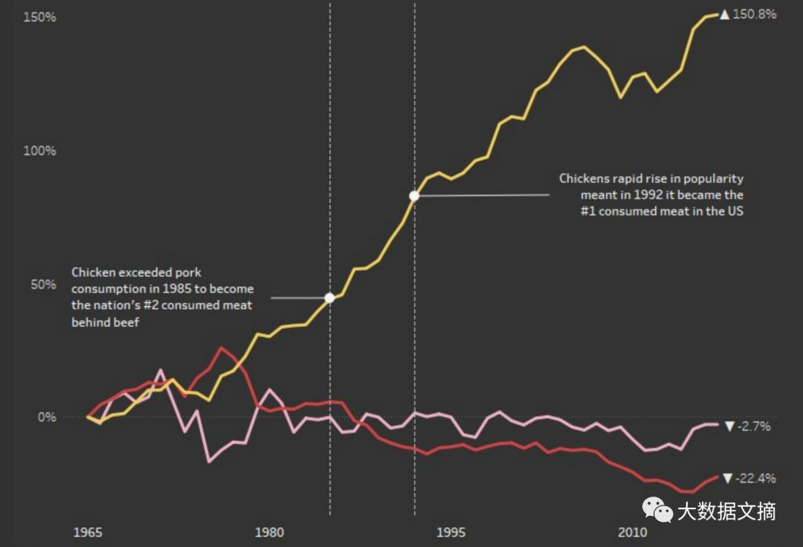
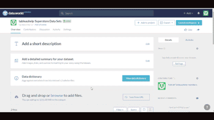

没资源？下一秒就可以加入的10个数据科学项目！

大数据文摘作品
编译：王梦泽、黄文畅、云舟
数据资源十分难得，分析过程更是困难重重。挖掘数据背后的意义能够帮助更多的研究者点燃数据研究的热情，也会帮助其他人入门数据分析，以下就是我们找到的十个典范。
删除Facebook页面：参与度指标和帖子@d1gi
这是一个关于数据新闻工作的案例：在2016年美国总统大选期间，有团队从Facebook挖掘了外界影响的数据，并据此与一些社会上大型的社交媒体展开了正面交锋。这场调查被包括华盛顿邮报和纽约时代周刊在内的知名媒体所收录。
这份数据是由数据新闻研究中心的Jonathan Albright为Digital Journalism提供的，是由5个宣称具有外在影响力的网页中的每一个页面上自然发言读者的帖子所构成的目录册。
它不仅保存了每篇帖子的完整文档，也揭示了除购买广告外，使用Facebook平台所能带来的其他潜在影响力。具体来说，这五个网页的内容传播力度更大。此外，这个数据集的讨论区是今年data.world里面最为火爆的。
Jonathan鼓励大家使用这个数据集来开展自己的研究和分析。这个集成数据集也展示了data.world上的其他新闻数据工作。
集成数据集：
https://data.world/gswider/data-journalism-on-data-world?utm_campaign=distinct_values&utm_source=blog&utm_medium=medium&utm_content=171229

Jonathan制作的互动性可视化界面
数字货币的每日行情@scuttlemonkey
如果你在去年的这个时候投资了比特币，你现在可能已经赚得盆丰钵满了。但如果你没有投资，也可以在这个数据集里使用比特币后悔计算器，来得出你错过的收益。
这个项目在IFTTT使用data.world的同步程序，从Coin Metrics（一个提供可视化服务的数据聚合器）提取每日最新数字货币的数据。在此数据集的讨论区中，你可以查看十多种加密货币的价格走势及多种视觉效果图。
数据集讨论区：
https://data.world/scuttlemonkey/coin-metrics/discuss/visualizations/64263?utm_campaign=dataquest&utm_source=blog&utm_content=180122

Patrick制作的数据可视化效果
联邦政府如何应对类鸦片类药物泛滥问题@usaspending
在美国，由于类鸦片类药物滥用而导致的服药过量率上升趋势令人担忧，它影响着全美成千上万的家庭。来自USAspending.gov的最新数据是由经财政部发布在data.world上的，里面包含详细的项目介绍和机构信息，你可以通过它了解联邦政府为解决这一问题所做的工作。
haotianxu91对此数据集进行了深入挖掘，并探究了能否把联邦政府提供的数据和对鸦片类药物滥用的治疗以及预防项目联系到一起。
项目详情：
https://data.world/search?q=org%3Atreasury&utm_campaign=dataquest&utm_source=blog&utm_content=180122
Data.world上公开且容易获取的数据使得美国许多州及联邦政府机构都在努力提高财政支出的责任感和透明度。输入data.world组织名称来搜索代理机构，就可能在data.world找到更多的政府数据。
data.world链接：
https://data.world/search?q=org%3Atreasury&utm_campaign=dataquest&utm_source=blog&utm_content=180122

由Haotian Xu提供
关联电影数据库@linked-data
在data.world，我们认为数据在（不久的）未来是有关联的，我们十分期待看到更多的社区成员解锁关联数据的真正潜力，并且使用SPARQL—一种数据库的语义查询语言（以data.world的猫头鹰吉祥物命名）。
使用SPARQL对这组数据集进行查询再现了著名的“Kevin Bacon的六度空间”理论（“Six Degrees of Kevin Bacon” ）——对于数据集中的任意两位演员，通过查询他们以前合作的搭档，你会发现他们之间所间隔的人（如果存在）不会超过六个。
只需在查询语句的第7和第8行中替换你想要查询的演员名字，然后点击“运行查询”，就可以开启“SPARQL的六度空间”了。（提示：结果十分有趣，可以多试几次。）
SPARQL的六度空间：
https://data.world/login?next=%2Flinked-data%2Flinkedmdb%2Fworkspace%2Fquery%3Fqueryid%3Db671cc87-2078-4057-b1eb-366e9c5f48e1%26utm_campaign%3Ddataquest%26utm_content%3D180122%26utm_source%3Dblog

最需要帮助的飓风重灾区@alyssaanalyzes
有39个地区被列入了Harvey总统宣布的飓风多发重灾区（PDD），虽然大多数遭受到财产损失的地区都需要修复和重建的援助，但资源有限的地区在获得联邦灾难恢复项目关注后会受益更多。
SP小组识别出了那些受财产损失影响最大的社区，并将数据发布在data.world。这个项目也同样被其他一些研究者推进，在data.world搜索“Hurricane Harvey”，会出现由许多个小组成员和组织创建的几十个数据集，他们希望通过给需要的人提供容易获取的重要数据，能够为灾后重建出一份力。
Hurricane Harvey的搜索结果：
https://data.world/search?q=hurricane+harvey&type=dataset&utm_campaign=dataquest&utm_source=blog&utm_content=180122
 由Alyssa制作的数据可视化效果
由Alyssa制作的数据可视化效果
新泽西州法医数据@stevestirling
根据柯林字典，2017年“假新闻”一词的使用量增加了365%。尽管人们对于媒体越来越不信任，但由于数据成为了全球顶级新闻机构公信度的基石，我们终于在今年看到了新闻领域的重大转变。
这组数据来自新泽西的州法医办公室，在历经数月对记录的争论后，数据发布的24小时内，新上任的州长Phil Murphy承诺将在即将到来的立法会议上会对系统进行“全面改革”。
这个例子说明了数据新闻是如何帮助社区，甚至影响公共政策的。了解更多新泽西先锋媒体的这场耗时18个月的调查请戳—死亡与功能障碍：新泽西州是如何背弃死者，背叛生者，令国家蒙羞的。
文章链接：
http://death.nj.com/？utm_campaign=dataquest&utm_source=blog&utm_content=180122

由 NJ Advance Media报道
医药支出@data4democracy
民主数据始于2016年12月，当时全球各地的人们开始在数据相关的问题上展开合作，使用Slack进行策划，GitHub编程以及data.world共享数据。没有成文的规定也没有正式的组织，他们的目标是用最短的时间来完成真正的有效的工作。
这个数据集来自最早的一批项目，当前在全球已有2000多名电子志愿者。通过使用这个数据集和data.world R包，小组成员Jennifer Thompson可以收集一个dashboard所需的数据，创建并推出派生的数据集，并构建从站点提取实时数据的Shiny dashboard。在R Views（由RStudio编辑的R社区博客）中了解Jennifer所做的工作。
Jennifer工作内容链接：
https://rviews.rstudio.com/2017/05/26/civic-data-wrangling-in-r-and-on-data.world/?utm_campaign=dataquest&utm_source=blog&utm_content=180122

由 Jennifer Thompson开发
国家足迹账户2017年版@footprint
想知道Grenada, Guyana和Gambia这三个国家的共同之处吗？它们都在全球足迹网（Global Footprint Network）的最小生态足迹名单之上。
全球足迹网（Global Footprint Network）的国家足迹账户 (NFAs) 记录了自1961年起生态资源使用情况以及各国的资源承载力。该组织在data.world上发布了2017年版的数据，对其进行分析后，可以帮助我们更好的了解经济发展与自然资源消耗之间的联系。
加入全球足迹网减少我们2018年的生态足迹，从计算自己的生态足迹来开始你的第一步吧！
全球足迹网：
http://www.footprintcalculator.org/?utm_campaign=dataquest&utm_source=blog&utm_content=180122

Tableau Desktop数据分析入门@tableauhelp
TableauHelp的教程能够帮助人们学习使用Tableau。数据项目包括指南、教程和练习，通过一个模拟练习来学习有关商业数据分析和可视化的基础知识。
学习在Tableau创建各种视图来研究数据链接：
https://data.world/login?next=%2Ftableauhelp%2Ftableau-desktop-101-step-into-the-shoes-of-a-data-analyst%2Fworkspace%2Ffile%3Ffilename%3D01_lets_get_started.md%3Futm_campaign%3Ddataquest%26utm_content%3D180122%26utm_source%3Dblog

TableauHelp提供的教程
人群百态@makeovermonday
社会数据项目周一大改造（Makeover Monday）的成员每周一会发布一条图表和其数据的链接，图表可以经由社区重新绘制。无论是简单的条形图还是复杂的信息图，他们都鼓励每个人参与进来。
链接：
http://www.makeovermonday.co.uk/

原文链接：
https://www.dataquest.io/blog/10-data-science-projects-join/
【今日机器学习概念】
Have a Great Definition
开课倒计时4天
数据科学实训营第5期
优秀助教推荐|姜姜
作为一枚对数据分析的理解仅限于Excel的小白，曾经一直认为通过写代码来分析数据是件无比高大上的事。可是，在数据科学实训营居然就实现了！
手把手的教学方式，助教和同学们热烈的交流讨论，让我慢慢地觉得一行行代码如此亲切。而当把自己头脑中的构思通过代码实现，看到结果的那一刻，真是无比激动！
经过Kaggle、天池的案例的历练，对这些数据比赛也开始兴趣盎然，有没有小伙伴有兴趣一起去玩一玩的？
作为第5期的北美地区助教，寄语各位学员：前方高能，请准备好足够的时间，如果你能按时提交作业，结业时一定脱胎换骨。

志愿者介绍